본 매뉴얼은 공용 데이터 수집 파이프라인 플랫폼으로 4 유통사 (이마트 / 홈플러스 /
롯데마트 / 하나로마트) 의 가격·행사·재고 데이터를 수집·표준화·통합하는 *시나리오
리허설* 의 화면 별 절차를 정리한 문서다.
작성 기준:
데이터를 같은 service_mart 로 통합
478b7bb)대상 독자: 운영자 / 데이터 매니저. 개발자 도움 없이 화면만으로 새 채널 추가
가능해야 함.
# Docker — Postgres / Redis / MinIO
cd infra && docker-compose up -d
# Backend — http://127.0.0.1:8000
cd backend
.venv/Scripts/alembic.exe upgrade head
.venv/Scripts/python.exe -c "import asyncio, sys; asyncio.set_event_loop_policy(asyncio.WindowsSelectorEventLoopPolicy()); import uvicorn; uvicorn.run('app.main:create_app', factory=True, host='127.0.0.1', port=8000)"
# Frontend — http://localhost:5173
cd frontend && pnpm dev
# Phase 8 데이터 시드 (4 유통사 + 가상 시나리오)
cd backend && PYTHONIOENCODING=utf-8 PYTHONPATH=. .venv/Scripts/python.exe ../scripts/phase8_seed_full_e2e.py
| 가상 채널 | 도메인 | 특징 |
|---|---|---|
| 이마트 | emart | 표준 API 형 — 정상 케이스 대표 |
| 홈플러스 | homeplus | 행사/할인 데이터 풍부 |
| 롯데마트 | lottemart | 상품명 정규화 난이도 높음 (low confidence) |
| 하나로마트 | hanaro | 농축수산물 산지/등급/단위 풍부 |
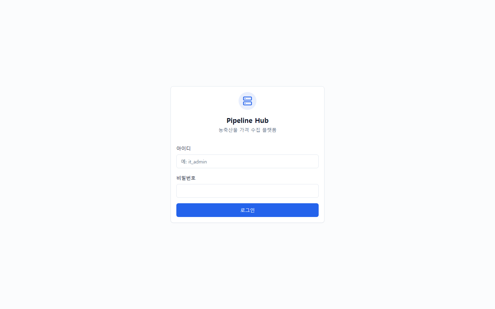
기능: ID / 비밀번호 입력 후 JWT 발급. 권한 (ADMIN / APPROVER / OPERATOR /
REVIEWER) 에 따라 메뉴 노출.
시나리오 적용: admin / admin (Phase 8 시드 기본 계정).
다음 스텝: 로그인 성공 시 Dashboard 자동 진입.
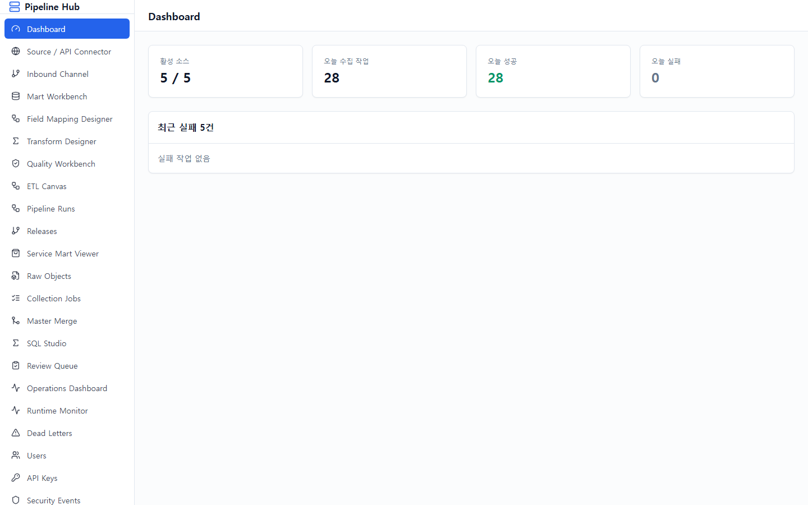
기능: 시스템 전반 현황 한 눈에 보기. 최근 run, 실패율, 적재 row 수.
시나리오 적용: 전체 4 유통사 + service_mart 의 통합 운영 상태 확인.
다음 스텝: 좌측 메뉴 "Source / API Connector" 클릭 → 4 유통사 API 등록 확인.
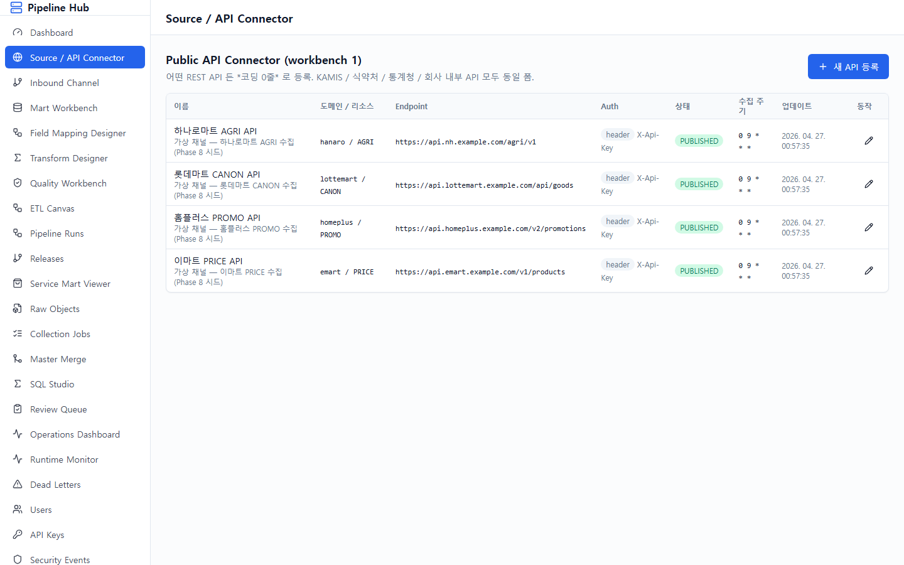
기능: 외부 OpenAPI 등록 (URL + 인증 + 파라미터 + 응답 형식). 코딩 없이 새
유통사 API 추가.
시나리오 적용 (이미 시드됨):
이마트 PRICE API → emart_mart.product_price (표준 API)홈플러스 PROMO API → homeplus_mart.product_promo (행사/할인)롯데마트 CANON API → lottemart_mart.product_canon (상품명 정규화)하나로마트 AGRI API → hanaro_mart.agri_product (산지/등급/단위)각 connector 는 PUBLISHED 상태 + cron 0 9 * 활성. 인증 = X-Api-Key 헤더.
다음 스텝: "Inbound Channel" 클릭 → 외부 push 채널 (크롤러/OCR/업로드)
확인.
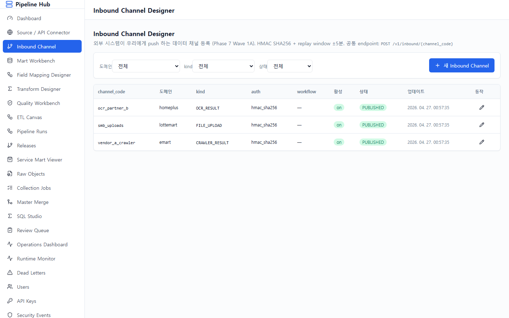
기능: 우리가 fetch 가 아닌 외부에서 push 하는 채널 등록. HMAC SHA256 +
replay window ±5분 + idempotency key 강제.
시나리오 적용:
vendor_a_crawler (CRAWLER_RESULT) — 외부 크롤링 업체 pushocr_partner_b (OCR_RESULT) — 외부 OCR 업체가 결과 pushsmb_uploads (FILE_UPLOAD) — 소상공인 CSV/Excel 업로드Endpoint: POST /v1/inbound/{channel_code} (예: /v1/inbound/vendor_a_crawler)
다음 스텝: "Mart Workbench" → 4 유통사용 mart 테이블 + 적재 정책 설계.
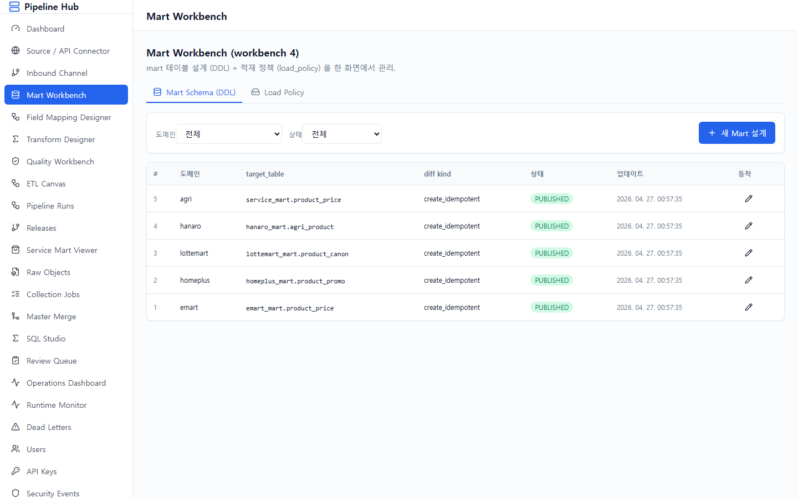
기능: 두 탭으로 구성:
1. Mart Schema — 컬럼 / 타입 / PK / partition / index 폼 → DDL 자동 생성
2. Load Policy — append_only / upsert / SCD2 / current_snapshot 모드 + key_columns
시나리오 적용: 5개 mart_design_draft + 5개 load_policy 모두 PUBLISHED:
service_mart.product_price (4 유통사 통합)모두 mode=upsert, key_columns=[retailer_code, retailer_product_code].
다음 스텝: "Field Mapping Designer" → API 응답 → mart 컬럼 매핑.
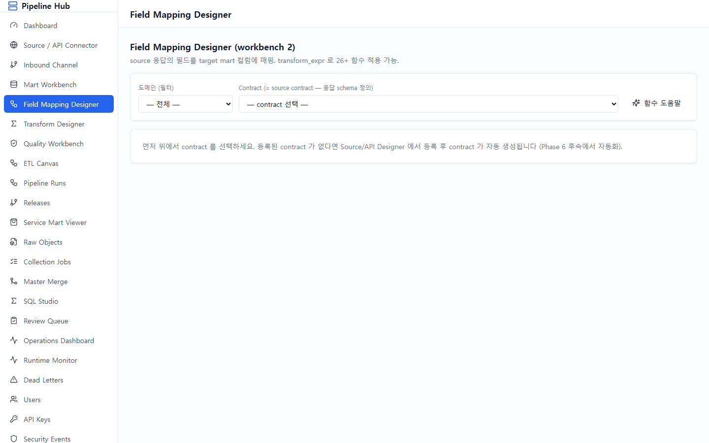
기능: source 응답의 JSONPath → target mart 컬럼 매핑. 26+ allowlist 함수
(text.trim / number.parse_decimal / date.parse 등) 적용 가능.
시나리오 적용: 4 contract × 평균 5 매핑 = 21 매핑 rows.
예시 — 하나로마트:
| source_path | target_column | transform | type |
|---|---|---|---|
$.product_cd | product_cd | — | TEXT |
$.name | name | — | TEXT |
$.origin | origin | — | TEXT |
$.grade | grade | — | TEXT |
$.unit | unit | — | TEXT |
$.price | price | — | NUMERIC |
다음 스텝: "Transform Designer" → SQL Asset / HTTP / Function / Provider
4탭에서 변환 자산 등록.
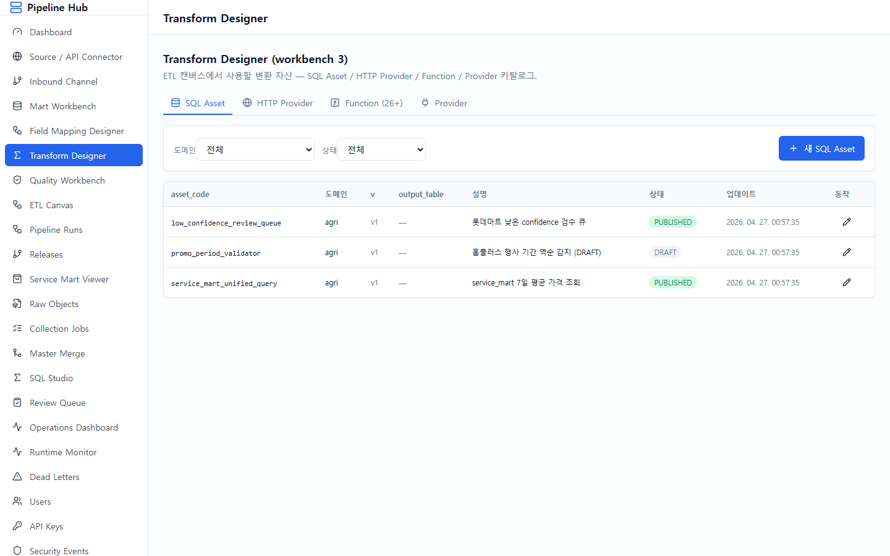
기능: 4 탭 — SQL Asset (등록·승인된 SQL) / HTTP Provider (외부 정제 API) /
Function 카탈로그 / Provider 등록.
시나리오 적용:
service_mart_unified_query (PUBLISHED) / low_confidence_review_queue (PUBLISHED) / promo_period_validator (DRAFT)
다음 스텝: "Quality Workbench" → DQ Rule + 표준코드 namespace.
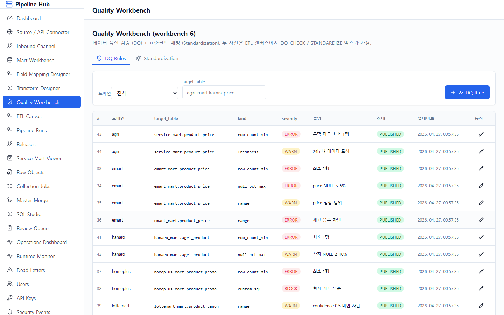
기능: 두 탭:
1. DQ Rules — 9종 rule_kind (row_count_min / null_pct_max / unique_columns /
reference / range / custom_sql / freshness / anomaly_zscore / drift)
2. Standardization — 표준코드 namespace + std_code_table 미리보기
시나리오 적용: 16 DQ rules PUBLISHED + 1 namespace STANDARD_PRODUCT
(10 표준 품목 — 사과/양파/한우 등).
각 유통사별 rule 예시:
range(stock_qty 0~100K)
다음 스텝: "ETL Canvas" → 위에서 만든 자산을 박스로 끌어와 조립.
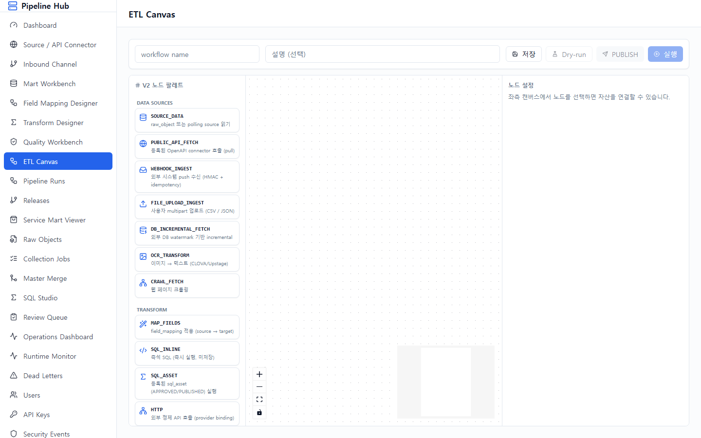
기능: 좌측 17종 노드 palette → 캔버스 드래그 → 박스 클릭 시 우측 drawer 에서
자산 dropdown 선택 → 화살표 연결 → 저장 → PUBLISH.
시나리오 적용: 5 workflows 시드됨 (모두 PUBLISHED, cron 0 9 *):
emart_price_daily : PUBLIC_API_FETCH → MAP_FIELDS → DQ_CHECK → LOAD_TARGET
homeplus_promo_daily : 동일 (행사 데이터)
lottemart_canon_daily : 동일 (정규화)
hanaro_agri_daily : 동일 (산지/등급)
service_mart_unification : SQL_ASSET_TRANSFORM (4 유통사 → service_mart 통합)
좌측 palette 노드 17종:
FILE_UPLOAD_INGEST / DB_INCREMENTAL_FETCH / OCR_RESULT_INGEST /
CRAWLER_RESULT_INGEST / OCR_TRANSFORM / CRAWL_FETCH
STANDARDIZE
다음 스텝: 캔버스 toolbar 의 "Dry-run" → 결과 트리 확인 → "PUBLISH".
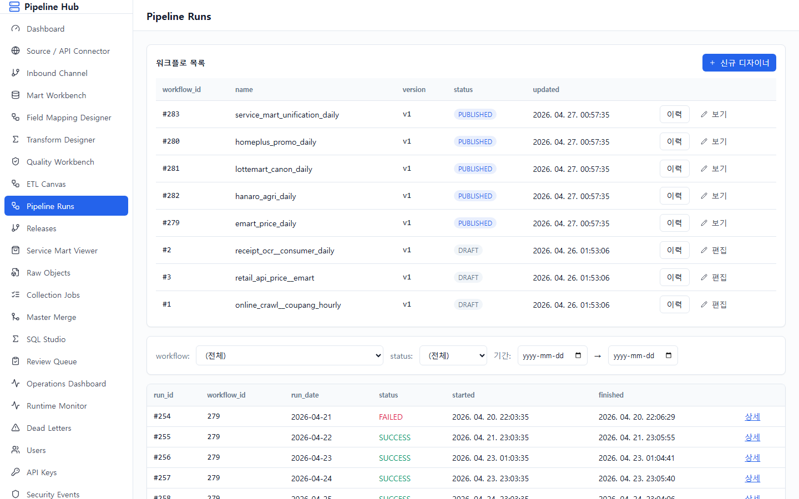
기능: 모든 워크플로 실행 이력. 클릭 시 박스별 상세 (PENDING / RUNNING /
SUCCESS / FAILED / SKIPPED) + 실시간 SSE 진행 상황.
시나리오 적용: 28 runs (4 유통사 × 7 일치).
의도적 실패 케이스 (시나리오상 운영자가 발견해야 할 부분):
각 FAILED run 의 후속 노드는 SKIPPED 처리. 운영자는 상세 화면에서 어느 박스에서
실패했는지 확인 가능.
다음 스텝: "Releases" → workflow 의 PUBLISHED 이력 확인.
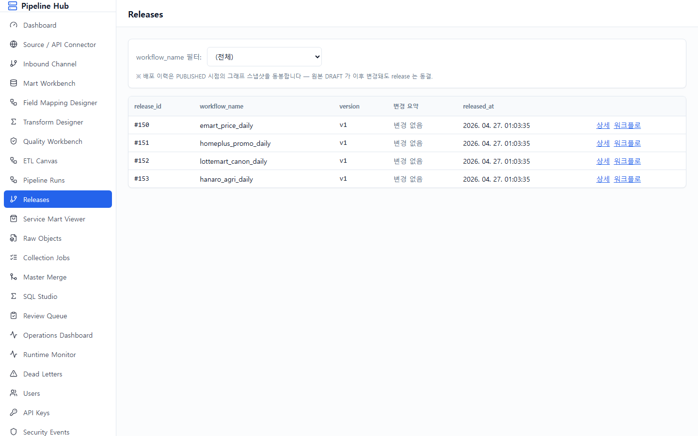
기능: workflow 의 PUBLISH 이력. 어떤 버전이 언제 누가 배포했는지. 롤백 가능.
시나리오 적용: 4 retailer workflow 의 release v1 시드 — 각 release 는
nodes_snapshot 으로 당시 박스 구성을 보존.
다음 스텝: "Service Mart Viewer" → 4 유통사 통합 마트 데이터 확인 (시연 핵심).
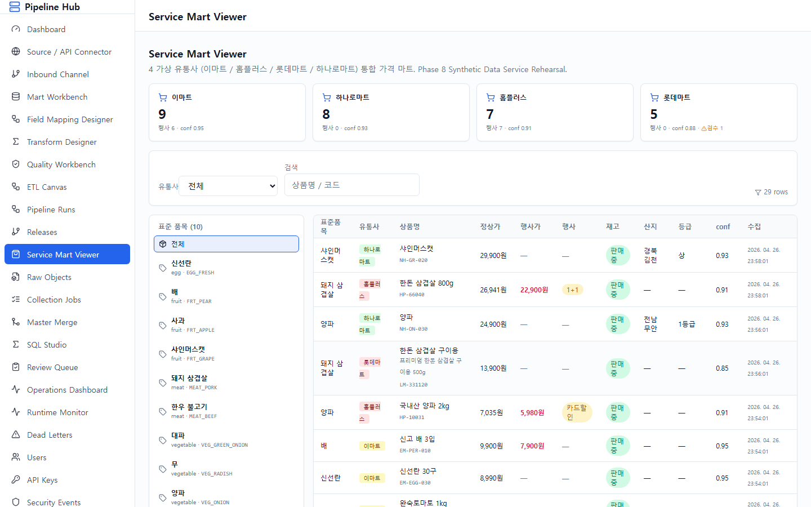
기능: 4 유통사 데이터가 동일 구조 (service_mart.product_price) 로 통합된
가격 마트 조회.
시나리오 적용:
confidence / 수집
**같은 "사과"가 4 유통사에서 다 다른 상품명으로 들어왔지만 같은 표준 품목 코드
(FRT_APPLE)로 묶임** — 공용 플랫폼의 핵심 시연.
다음 스텝: "Raw Objects" → 원천 데이터 추적.
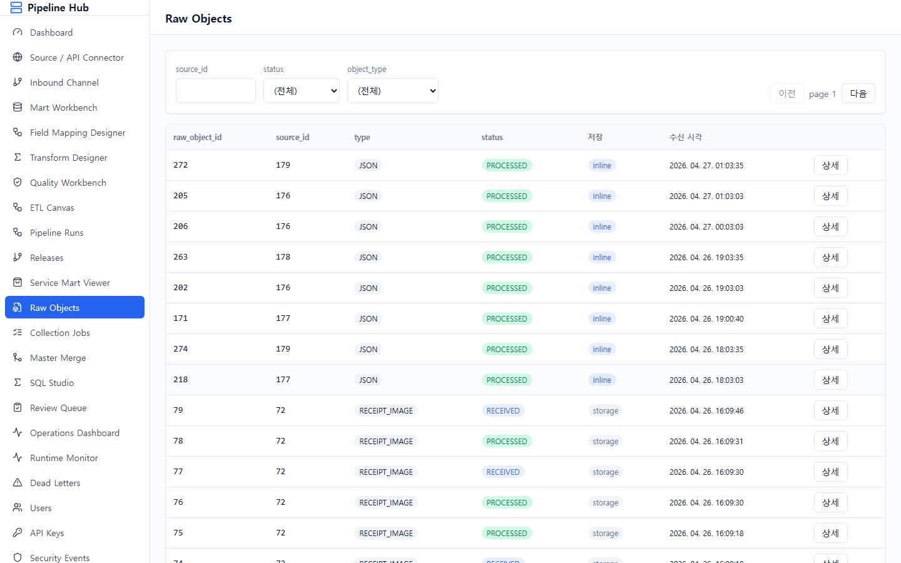
기능: API/크롤러/OCR 으로 받은 raw payload 원본 보기. idempotency_key 기준
중복 검사. 재처리 시 raw 다시 활용.
시나리오 적용: 127 raw rows 시드 (4 유통사 × 10 + 일부 기존).
partition by partition_date (월별). 각 row 는 source_id, content_hash,
payload_json (원본 JSON), object_type=JSON.
다음 스텝: "Collection Jobs" → 수집 작업 단위 추적.
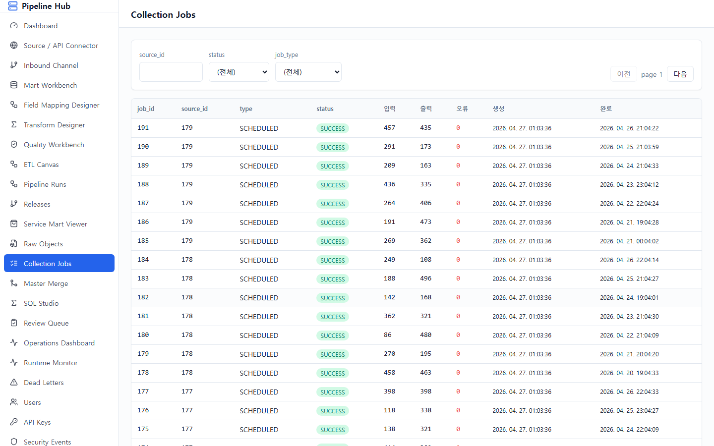
기능: 단일 수집 작업 (run.ingest_job) 의 상태. 어떤 source 가 언제 trigger
되어 raw 몇 건 받았는지.
시나리오 적용: 28 jobs 시드 (4 유통사 × 7 일).
각 job: SCHEDULED 타입, SUCCESS 상태, input/output count 80~500.
다음 스텝: "Review Queue" → 검수가 필요한 데이터.
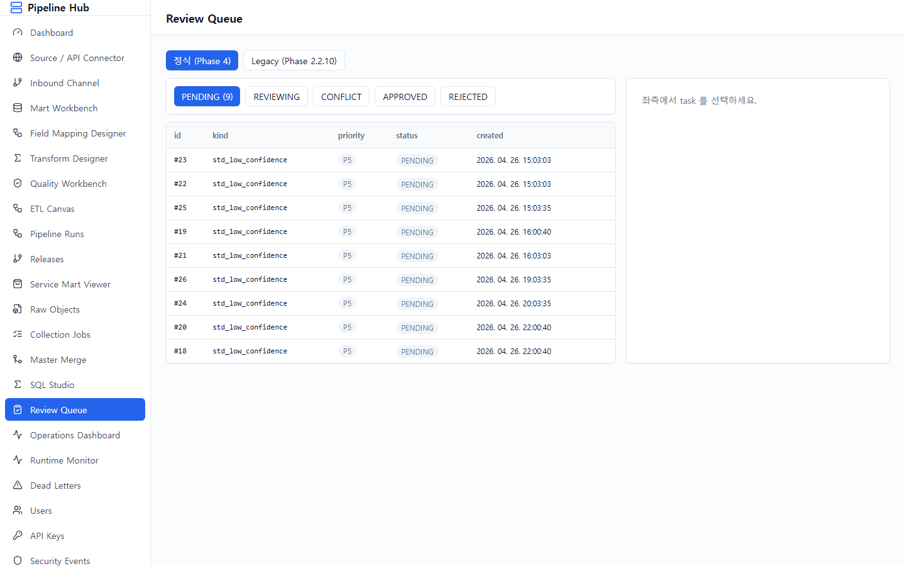
기능: 사람의 눈이 필요한 작업 큐. 표준코드 매칭 confidence 가 낮을 때
자동으로 분기.
시나리오 적용: 9 review tasks — 모두 task_kind=std_low_confidence.
롯데마트의 confidence < 0.75 데이터 (예: "프리미엄 빨간 과일 봉지", "채소 묶음")
가 검수 큐로 이동. payload_json 에 candidates 후보 (사과 / 배 / 포도) 포함.
다음 스텝: "Operations Dashboard" → 전체 운영 통합 모니터링.
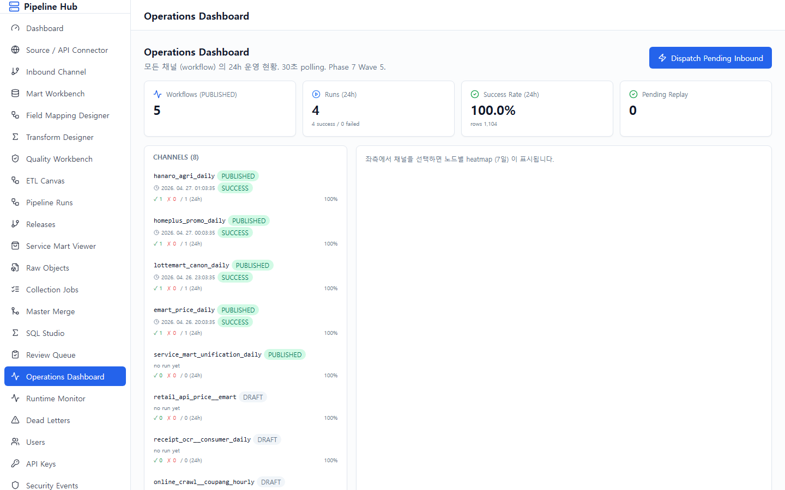
기능: 8 channels (workflow) 동시 운영 상태 한 화면.
시나리오 적용:
Wave 6 dispatch: 우측 상단 "Dispatch Pending Inbound" 버튼 — RECEIVED
상태의 inbound envelope 을 일괄 처리하여 workflow trigger.
polling: 30초마다 자동 갱신 (요약). run detail 만 SSE 실시간.
[1] 로그인 (admin/admin)
↓
[2] Dashboard 진입
↓
[3] Source / API Connector — 4 유통사 API 확인
↓
[4] Inbound Channel — 외부 push 3 채널 확인
↓
[5] Mart Workbench — 5 mart + 5 load policy
↓
[6] Field Mapping Designer — 21 매핑
↓
[7] Transform Designer — 3 SQL + 8 provider
↓
[8] Quality Workbench — 16 DQ rules
↓
[9] ETL Canvas — 5 workflow 박스 조립
↓
[10] Pipeline Runs — 28 runs (3 의도적 FAILED)
↓
[11] Releases — 4 배포 이력
↓
[12] Service Mart Viewer — 29 통합 row (시연 핵심)
↓
[13] Raw Objects — 127 원천
↓
[14] Collection Jobs — 28 수집 작업
↓
[15] Review Queue — 9 검수 task
↓
[16] Operations Dashboard — 8 channel 통합 모니터
| 화면 | 시나리오 | 기대 동작 |
|---|---|---|
| Pipeline Runs | 롯데마트 Day 3 FAILED | downstream SKIPPED |
| Pipeline Runs | 홈플러스 Day 5 FAILED | DQ 실패 메시지 |
| Pipeline Runs | 이마트 Day 7 FAILED | error_message 표시 |
| Service Mart Viewer | 롯데마트 confidence < 0.85 | 행마다 ⚠ 마크 |
| Review Queue | low confidence 9건 | candidates 후보 표시 |
| Operations Dashboard | 채널별 success rate | 100%~75% 범위 |
| Inbound Events (audit) | 일부 FAILED status | schema mismatch 사유 |
본 매뉴얼의 시나리오는 가상 데이터 기준이며, Phase 9 (실증) 진입 전에 다음을
보완해야 한다:
1. 백엔드 테스트 환경 + Phase 8 E2E 테스트 자동화
2. Inbound 자동화 (수동 dispatch 제거 → outbox actor)
3. 운영 dashboard 의 placeholder 지표 → 실값 연결
4. ETL Canvas 의 사용자 진행 가이드 (1.수집→2.매핑→...→6.배포)
5. Field Mapping 의 시각 매핑 (JSON tree drag&drop)
6. Service Mart Viewer 의 가격 비교 차트 + lineage
상세는 docs/phases/PHASE_8_1_HARDENING.md 참조.
문서 끝.